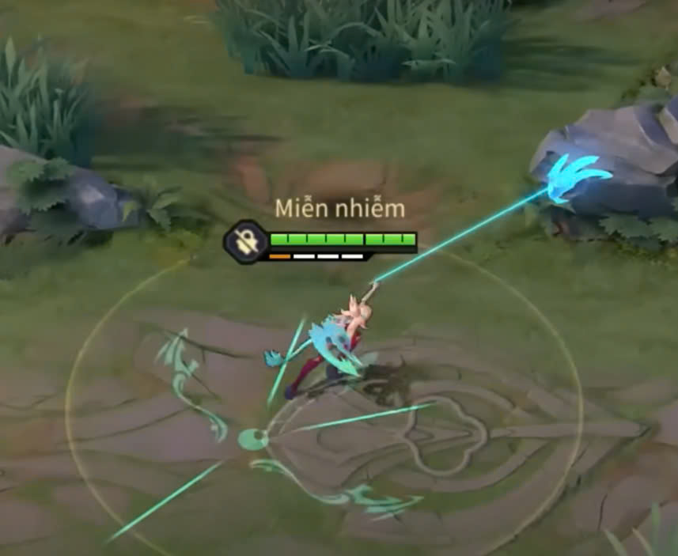

Long trảo có thể được tích tới 2 lần và có tầm chiêu xa giúp Aoi trở thành một trong những vị tướng cơ động biến ảo nhất Liên Quân tuy nhiên lại khá khó sử dụng và có nhiều cách sử dụng khác nhau
Cụ thể, khi vuốt chiêu 2 Aoi sẽ vươn long trảo theo đường thẳn và làm chậm mọi mục tiêu trên đường đi, nếu long trảo không chạm chướng ngại vật nào (tường, trụ,) sẽ lập tức hủy chiêu,nếu ném trúng chướng ngại vật người chơi có thể chọn 2 cách xử lý
Cách 1:
Vuốt thẳng nút di chuyển theo hướng đó, Aoi sẽ lướt thẳng đến chướng ngại vật và có thể vượt qua 1 số tường mỏng, cách sử dụng này giúp Aoi tiếp cận chướng ngại vật nhanh nhưng không có sự đột biến và khoảng cách đi được cũng không dài nên chỉ nên sử dụng trong trường hợp cần áp sát nhanh chóng hoặc trong địa hình hẹp

Ngoài ra, khi gặp 1 địa hình dày mà Aoi không thể lướt qua, nếu người chơi vuốt nhanh nuốt di chuyển sang hướng khác Aoi có thể bật nhẹ qua hướng đó, các bạn có thể tận dụng mẹo này để hất tung tướng địch trong phạm vi gần
Cách 2:
Vuốt nút di chuyển sang 1 trong 2 phía và giữ nút di chuyển, Aoi sẽ bay theo vòng tròn, đến đây có 3 cách xử lý:
-Thả nút di chuyển bất cứ lúc nào bạn muốn trong lúc đu Aoi sẽ dừng lại
-Trên đường đi gặp tướng địch sẽ hất tung chúng và gây 1 lượng sát thương nhỏ
-Trên đường đi người chơi có thể vuốt chiêu 1 để lướt đi tùy ý để hất tung tướng địch đồng thời tạo 1 lượng giáp nhỏ, cách sử dụng này mang lại độ biến ảo cao nhất khi vừa tăng được tối đa tầm chiêu sử dụng của cả Long trảo và Long diệt lại vừa có thể sử dụng nhằm nhấp nhả và câu chiêu của tướng địch
Ngoài ra, người chơi quen tay có thể sử dụng cách đu 2 dây nhằm tăng khoảng cách tiếp cận bằng cách tích trữ 2 lần Long trảo và sử dụng Long trảo lần thứ 2 khi đang trong thời gian đu của lần thứ nhất